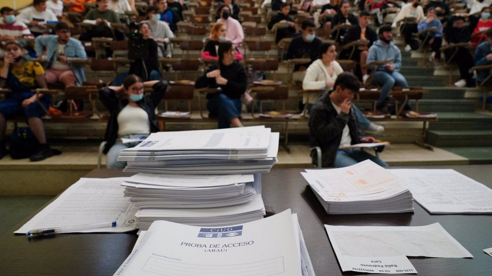

SOBRE MÍ |
|
Soy Santiago Giraldo, estudiante.Mi pasión son las ciencias... y los números.Tengo 16 años, estoy en Segundo de Bachillerato Tecnológico (sí, el mejor de todos) y mi aspiración es poder estudiar Ingeniería Aeroespacial. |

|
AFICIONES |
||
Aficiones académicasComo he mencionado anteriormente, mi pasión son los números. Sin embargo, también disfruto con asignaturas como:
La conclusión que puedo obtener es que me encanta aprender todo lo que pueda, incluso si en un futuro no me voy a especializar en ello. |
VideojuegosAdemás de estudiar, también invierto gran parte de mi tiempo en videojuegos. Algunos me ayudan a evadir en cierta forma la realidad, otros son tan épicos como series como Juego de Tronos (un 10/10, sinceramente), o simplemente presentan una historia asombrosa acompañada de una banda sonora aún más impresionante. Algunos de los que más me gustan son:
|
Otras aficionesEn lo que me sobra de tiempo libre, me gusta hacer otras actividades:
|
PROYECTOSEstos son algunos de mis proyectos. |
|
|  |
Proyecto académicoComo buen estudiante de Segundo de Bachillerato, este año afronto en junio la PEvAU, la PAU, la EvAU... para que nos entendamos, la Selectividad. ¿Cuál es el proyecto? Poder alcanzar la máxima puntuación que me sea posible para entrar a la carrera. |
Proyectos literariosActualmente me encuentro escribiendo un par de obras. Por un lado, estoy escribiendo Crónicas de Galdía, mi proyecto de libro, una historia que trata sobre al búsqueda de la venganza de uno de los gobernadores del Imperio de Galdía, y que pronto, la misión desentrañará algunos de los secretos más oscuros de la Corona y del Imperio. Y por otro lado, estoy escribiendo Esastrise, un relato corto, sobre la (extra)ordinaria vida de un chaval que se ve involucrado en un plan que decidirá el destino del mundo... o al menos la vida de él. |
|
CONTACTO |
|
Email: |
sramirez20@iesfranciscodeloscobos.com |
Teléfono: |
+34 6XX XX XX XX |
Santiago Ramírez Giraldo, 2025 |
|